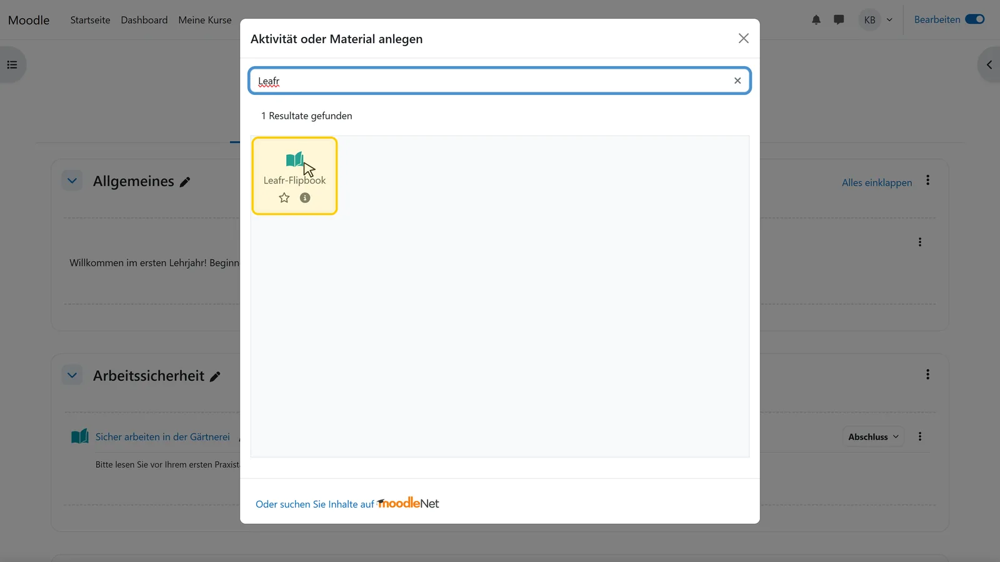
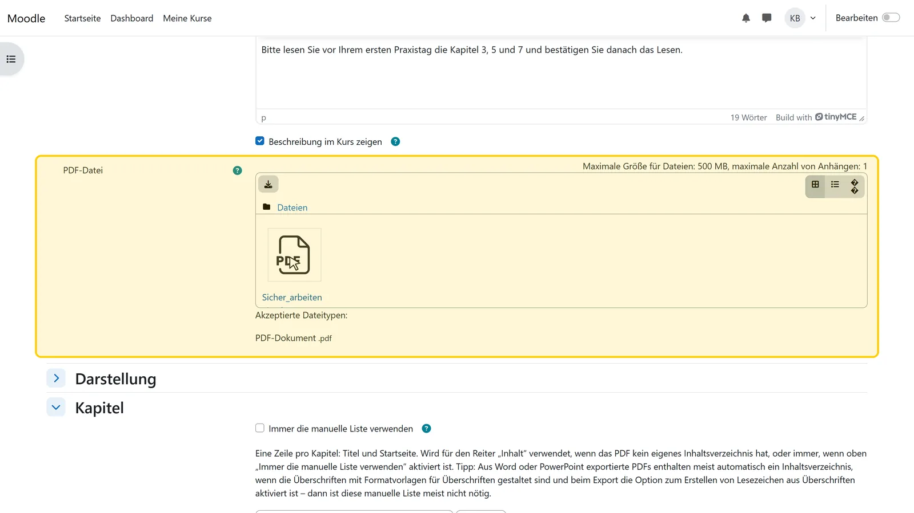
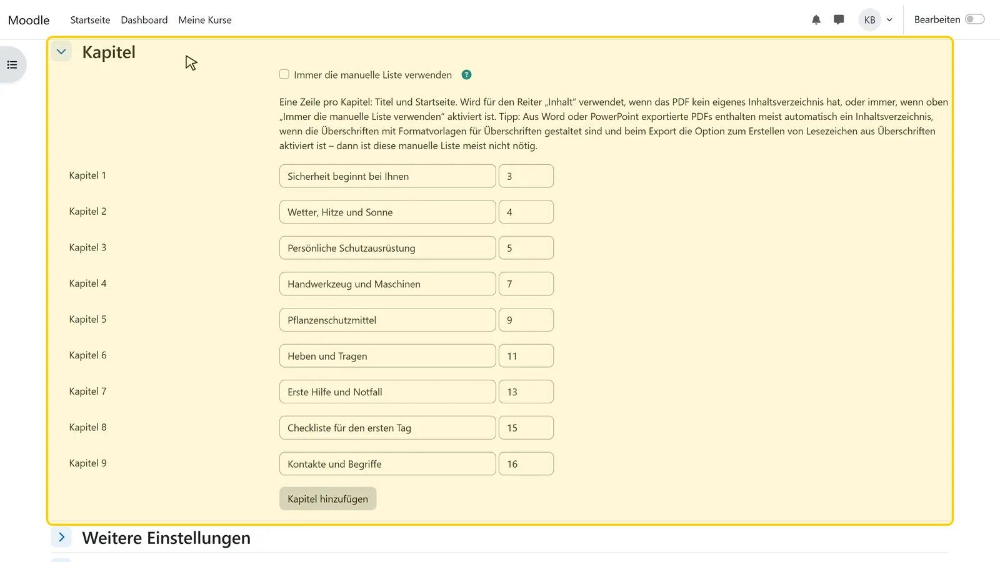
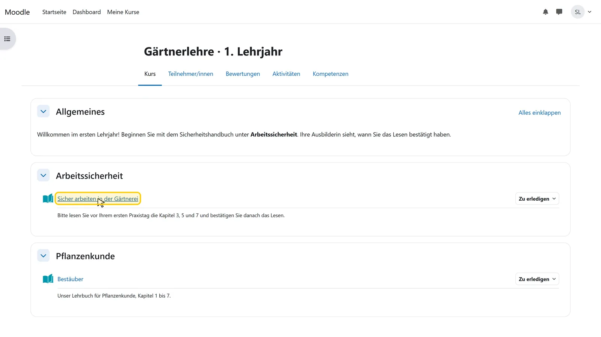
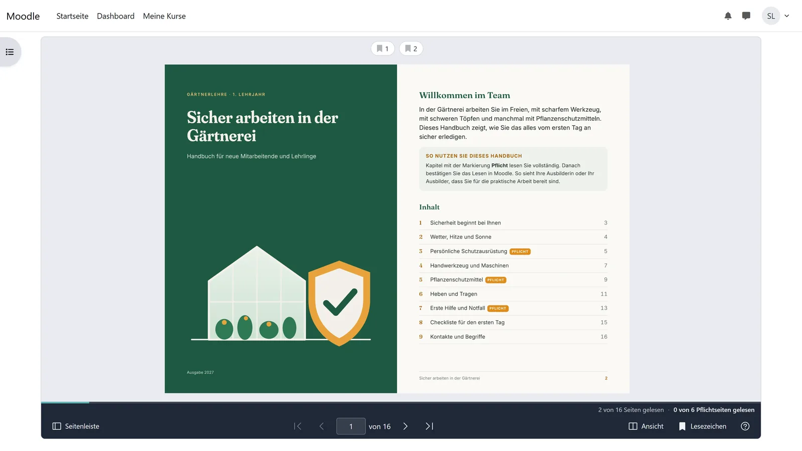
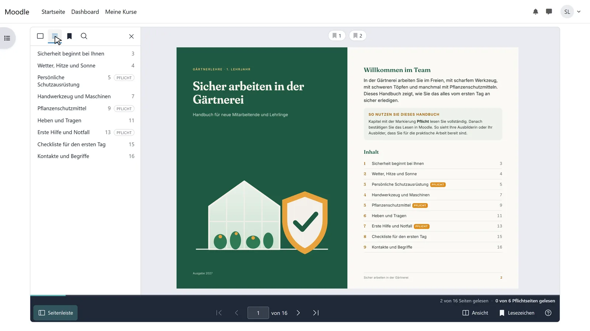

PDF in Moodle als Blätterbuch anzeigen
Moodle bietet ein PDF von sich aus als Datei an: Je nach Einstellung erscheint es im PDF-Viewer des Browsers, in einem neuen Fenster oder als Download, und der Kurs weiß nur, dass es geöffnet wurde. Mit dem kostenlosen Aktivitäts-Plugin Leafr öffnet sich das PDF im Kurs als Buch: Teilnehmende blättern, springen zu Kapiteln und durchsuchen den Text, und Leafr hält fest, welche Seiten sie gesehen haben.
Stand: 5. November 2026
Was Sie brauchen
- Moodle 4.5 bis 5.3, Leafr von der Administration installiert (aus dem Moodle Marketplace)
- Bearbeitungsrechte im Kurs, zum Beispiel als Trainer/in
- Eine PDF-Datei
Schritt für Schritt
-

Schritt 1 von 6Leafr im Abschnitt hinzufügen
Schalten Sie oben rechts Bearbeiten ein. Klicken Sie im Abschnitt auf Aktivität oder Material anlegen, tippen Sie „Leafr“ ins Suchfeld und wählen Sie Leafr-Flipbook.
-

Schritt 2 von 6PDF hochladen
Geben Sie einen Namen ein und ziehen Sie das PDF in das Feld PDF-Datei. Die Beschreibung ist freiwillig; sie steht auf der Kursseite, wenn „Beschreibung im Kurs zeigen“ angehakt ist.
-

Schritt 3 von 6Kapitel prüfen
Das Inhaltsverzeichnis übernimmt Leafr aus den Lesezeichen des PDFs. Hat das PDF keine, tragen Sie unter Kapitel Titel und Startseite ein. Unter Darstellung legen Sie die Startseite fest und ob Teilnehmende die Originaldatei herunterladen dürfen (Herunterladen erlauben).
-

Schritt 4 von 6Speichern und öffnen
Klicken Sie auf Speichern und zum Kurs. Das Flipbook steht jetzt im Abschnitt, ein Klick öffnet es.
-

Schritt 5 von 6Teilnehmende blättern
Auf großen Bildschirmen zeigt Leafr eine Doppelseite, am Handy eine Einzelseite. Geblättert wird mit den Pfeilen, dem Seitenzahl-Feld, der Tastatur oder durch Ziehen an der Ecke. Beim nächsten Mal öffnet sich das PDF auf der zuletzt gelesenen Seite.
-

Schritt 6 von 6Inhalt, Suche und Lesezeichen
Der Knopf Seitenleiste öffnet Seitenminiaturen, Inhaltsverzeichnis, Lesezeichen mit Notizen und die Volltextsuche. Wer lieber scrollt, wählt im Menü Ansicht die einfache Ansicht; sie funktioniert auch mit Screenreadern.
Gut zu wissen
Herunterladen ausgeschaltet
Ist Herunterladen erlauben aus, zeigt Leafr keinen Download-Knopf. Der Browser muss das PDF zum Anzeigen trotzdem laden, wer es darauf anlegt, kann es also speichern. Einen Kopierschutz bietet Leafr nicht.
Inhaltsverzeichnis und Suche
Das automatische Inhaltsverzeichnis braucht Lesezeichen im PDF, zum Beispiel aus Word-Überschriften. Die Volltextsuche braucht echten Text; gescannte Dokumente vorher durch eine Texterkennung (OCR) schicken.
Browser
Chrome oder Edge ab 125, Firefox ESR, Safari ab 18. Ältere Browser zeigen statt des Dokuments einen Hinweis.
Weitere Anleitungen
- Pflichtlektüre und Lesebestätigung in Moodle einrichtenPflichtkapitel festlegen und eine Bestätigung verlangen; erledigt ist die Aktivität erst, wenn beides erfüllt ist.
- In Moodle sehen, wer ein PDF gelesen hatEine Tabelle je Aktivität: wer die Pflichtseiten gelesen und wann bestätigt hat. Mit CSV-Export.